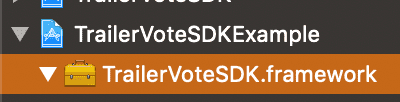
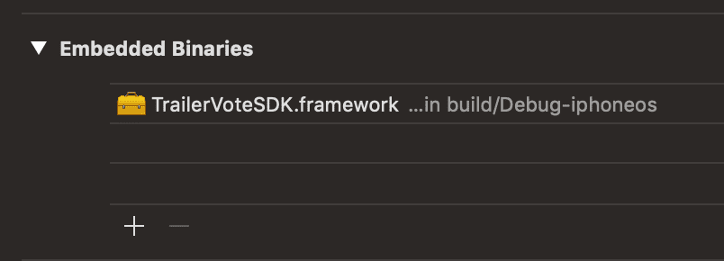
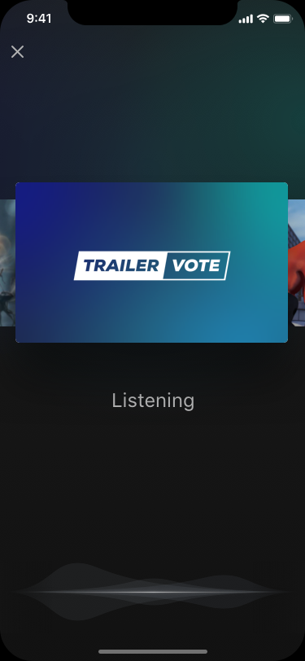
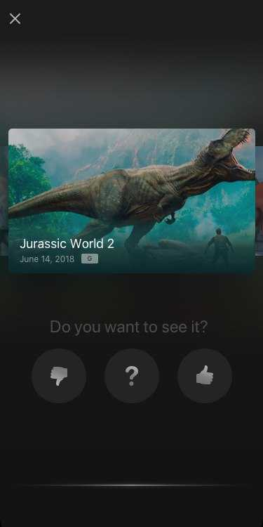
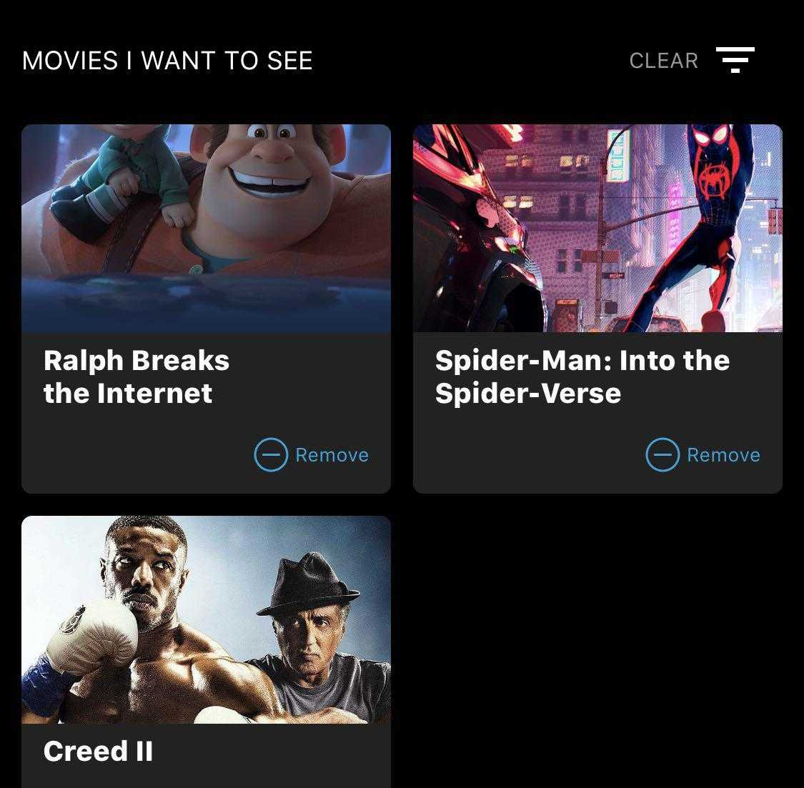

Introduction
The TrailerVote is a innovative software service that enables movie-ticketing apps to increases user engagement and customer understanding by encouraging moviegoers to rate trailers as they are played on the big screen of the cinema. Users are later sent notifications as a reminder that tickets for the movie they wanted see are now on sale.
Features include:
- Theatre-Optimized Audio Recognition: Optimized for complex cinema environments including 7+ speakers, reverb, echo, deep bass
- Branding & Styling: Custom branding for listening experience with your choice of background colors and logo.
- Offline audio recognition: Minimizes the need for network connectivity at the cinema.
- Custom Recognition: Identify trailer content, loyalty program promotions, or advertisements and serve the corresponding interactions.
Requirements
In order to use TrailerVote technology, you must have the following:
- A movie-related mobile app
- Xcode 9 or higher
- iOS 10 or higher
iOS
Installation
- Download & unzip the latest iOS SDK from https://trailervote.com/downloads/ios-sdk.
- Drag TrailerVoteSDK.framework into your Xcode project tree: 
- In your app Target Settings -> General tab, under the Embedded Binaries section, click the + button and select the imported TrailerVoteSDK.framework item. Click the Add button. 
Getting Started
import TrailerVoteSDK
#import <TrailerVoteSDK/TrailerVoteSDK.h>
The TrailerVote SDK has to be imported before it can be used.
@UIApplicationMain
class AppDelegate: UIResponder, UIApplicationDelegate {
func application(_ application: UIApplication, didFinishLaunchingWithOptions launchOptions: [UIApplication.LaunchOptionsKey : Any]? = nil) -> Bool {
// setup the SDK credentials
TVTrailerVoteFactory.setupCredentials(withUsername: "ReplaceThisWithAKeyWeProvide", password: "ReplaceThisWithAPasswordWeProvide")
// launch the trailer recognition feature data preload
TVTrailerVoteFactory.shared().launchDataPreload()
// override the default partner logo image
let partnerLogoImage = UIImage(named: "logo")
TVTrailerVoteFactory.shared().setPartnerLogoImage(partnerLogoImage)
// process a remote notifications payload, if the app was launched by tapping the notification
if let remoteNotificationPayload = launchOptions?[.remoteNotification] as? [AnyHashable: Any] {
TVTrailerVoteFactory.shared().processPushNotificationPayload(remoteNotificationPayload)
}
return true
}
@interface AppDelegate : UIResponder <UIApplicationDelegate>
@property (nonatomic) UIWindow * window;
@end
@implementation AppDelegate
- (BOOL)application:(UIApplication *)application didFinishLaunchingWithOptions:(NSDictionary *)launchOptions
{
// setup the SDK credentials
[TVTrailerVoteFactory setupCredentialsWithUsername:@"ReplaceThisWithAKeyWeProvide" password:@"ReplaceThisWithAPasswordWeProvide"];
// launch the trailer recognition feature data preload
[[TVTrailerVoteFactory sharedFactory] launchDataPreload];
// override the default partner logo image
UIImage * partnerLogoImage = [UIImage imageNamed:@"logo"];
[[TVTrailerVoteFactory sharedFactory] setPartnerLogoImage:partnerLogoImage];
// process a remote notifications payload, if the app was launched by tapping the notification
if (options[UIApplicationLaunchOptionsRemoteNotificationKey]) {
NSDictionary * payload = (NSDictionary *)options[UIApplicationLaunchOptionsRemoteNotificationKey];
[[TVTrailerVoteFactory sharedFactory] processPushNotificationPayload:payload];
}
return YES;
}
The setupCredentials, launchDataPreload, setPartnerLogoImage, and processPushNotificationPayload functions can be included in the didFinishLaunchingWithOptions function.
func application(_ application: UIApplication, didRegisterForRemoteNotificationsWithDeviceToken deviceToken: Data) {
// enable the remote notifications feature once the device token is received
TVTrailerVoteFactory.shared().enablePushNotifications(withDeviceID: deviceToken.map { String(format: "%02.2hhx", $0) }.joined())
}
func application(_ application: UIApplication, didReceiveRemoteNotification userInfo: [AnyHashable : Any], fetchCompletionHandler completionHandler: @escaping (UIBackgroundFetchResult) -> Void) {
// get the SDK to process received remote notification payload
TVTrailerVoteFactory.shared().processPushNotificationPayload(userInfo)
completionHandler(.noData)
}
}
- (void)application:(UIApplication *)application didRegisterForRemoteNotificationsWithDeviceToken:(NSData *)devToken {
const unsigned * tokenBytes = [devToken bytes];
NSString * hexToken = [NSString stringWithFormat:@"%08x%08x%08x%08x%08x%08x%08x%08x",
ntohl(tokenBytes[0]), ntohl(tokenBytes[1]), ntohl(tokenBytes[2]),
ntohl(tokenBytes[3]), ntohl(tokenBytes[4]), ntohl(tokenBytes[5]),
ntohl(tokenBytes[6]), ntohl(tokenBytes[7])];
// enable the remote notifications feature once the device token is received
[[TVTrailerVoteFactory sharedFactory] enablePushNotificationsWithDeviceID:hexToken];
}
- (void)application:(UIApplication *)application didReceiveRemoteNotification:(NSDictionary *)userInfo fetchCompletionHandler:(void (^)(UIBackgroundFetchResult result))completionHandler
{
// get the SDK to process received remote notification
[[TVTrailerVoteFactory sharedFactory] processPushNotificationPayload:userInfo];
}
@end
In order to receive the notifications from TrailerVote, you have to enable notifications.
TVTrailerVoteFactory.shared().logEvent("ticket-purchased", identifier: "your-movie-identifier", quantity: "number-of-tickets", value: "sum-of-ticket-prices", fees:"convenience-fees-charged", currency:"three-letter-currency-code")
[[TVTrailerVoteFactory sharedFactory] logEvent:@"ticket-purchased" identifier:@"your-cinema-identifier" quantity:@"number-of-tickets" value:@"sum-of-ticket-prices" fees:"convenience-fees-charged" currency:@"three-letter-currency-code"];
To determine the effectiveness of notifications and reminders, use the logEvent method to report the completion of a transaction (in this case a ticket purchase) to TrailerVote. These results will be reflected in the client's analytics.
In-Theatre Voting Experience
The main feature of the SDK is the movie trailers recognition. We use the TVAudioRecognitionViewController class for presenting a full-screen user interface and for handling the recognition processes. 
TVAudioRecognitionViewController * audioRecognitionVC = [[TVTrailerVoteFactory sharedFactory] audioRecognitionViewController];
[self presentViewController:audioRecognitionVC animated:YES completion:nil];
let audioRecognitionVC = TVTrailerVoteFactory.shared().audioRecognitionViewController()
present(audioRecognitionVC, animated: true, completion: nil)
Instantiate the view controller by calling the [TVTrailerVoteFactory audioRecognitionViewController] method of the main factory class:
After creating an instance, the audio recognition view controller can be easily presented using UIKit present(_:animated:completion:) method:
When the movie trailer is recognized, the voting buttons are shown with the prompt for the user to vote.  After the user votes, the feedback is recorded internally in the SDK and transmitted to TrailerVote. This means that this information is visible in the voted trailers feed and any API that exposes the vote.
Note: Special advertisement clips, such as ad banners or special action triggers are handled differently - the fullscreen web view is presented with the corresponding url being loaded or some other UI elements are presented, such as the “Put your phones away” view.
Displaying the Watchlist

To embed the view into your UI, call the
[[TVTrailerVoteFactory sharedFactory] votedTrailersFeedViewControllerEmbeddedInParentViewController:parentView:]
TVTrailerVoteFactory.shared().votedTrailersFeedViewControllerEmbedded(inParentViewController:parentView:)
Additional Notes
[[TVTrailerVoteFactory sharedFactory] disablePushNotifications]
TVTrailerVoteFactory.shared().disablePushNotifications()
In some time later, when you wish to stop the remote notifications capability, call the method to remove the current device from the notifications recipients list.